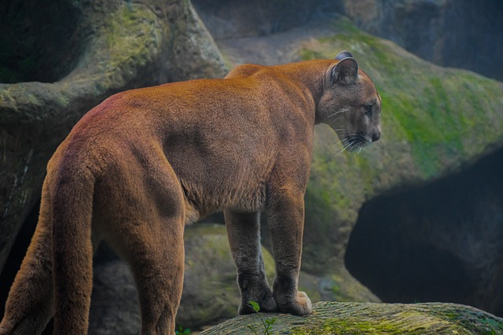
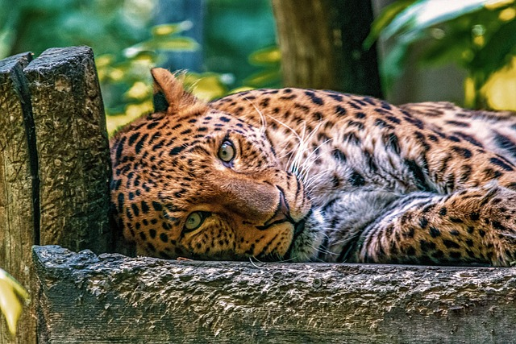
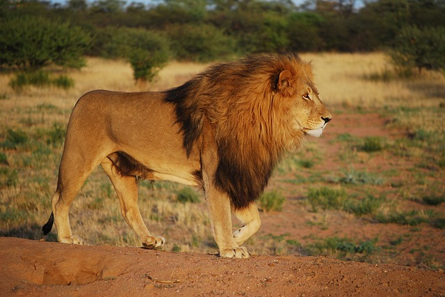

Вовк - найзагадковіше тварина із нині живих. Його спосіб життя і звички часто приводять людей в подив, що ж це за тварина. Лютий хижак чи відданий і вірний член своєї зграї. Хоча про вовка складено чимало легенд і казок, дізнатися хто ж він насправді можна тільки з досліджень науковців та їх наукових робіт.
Тигр
Тигри є найбільш упізнаваними великими хижаками з родини котячих. Чорно-руда смугаста шкура цих створінь стала їхньою своєрідною візитною карткою. Репутація тигрів, як безжальних хижаків, так само, як й їхнє яскраве смугасте забарвлення, немов застерігає від зустрічі з цією твариною на її території. Великі й масивні, тигри здатні битися з будь-яким супротивником.
Пума

У своєму ареалі проживання пума є одним із домінуючих хижаків. Ці граціозні тварини, яких ще називають гірськими левами,
відрізняються спритністю, витривалістю і високим рівнем інтелекту. Вони здатні планувати атаки на здобич,
яка нічого не підозрює, швидко міркувати і запекло битися, якщо їм загрожує небезпека.
Леопард

Леопарди – граціозні хижаки з родини котячих, гнучкі, сильні, стрімкі та прекрасні. На жаль, повсюдне поширення людської цивілізації все більше і більше витісняє леопардів за межі звичних їм регіонів. Результат цього цілком передбачуваний: вже давно ці великі кішки занесені до Червоної Книги, оскільки їм просто загрожує вимирання.
Лев

Лев – цар звірів, ще його називають королем джугнлів. Леви величні тварини, що викликають захоплення своїм потужним риком, красивою густою гривою і хоробрістю.Леви живуть сімейними групами, які називаються прайдами, що складаються з одного або кількох левів-самців, кількох споріднених самок та їхніх левенят.
.jpg)